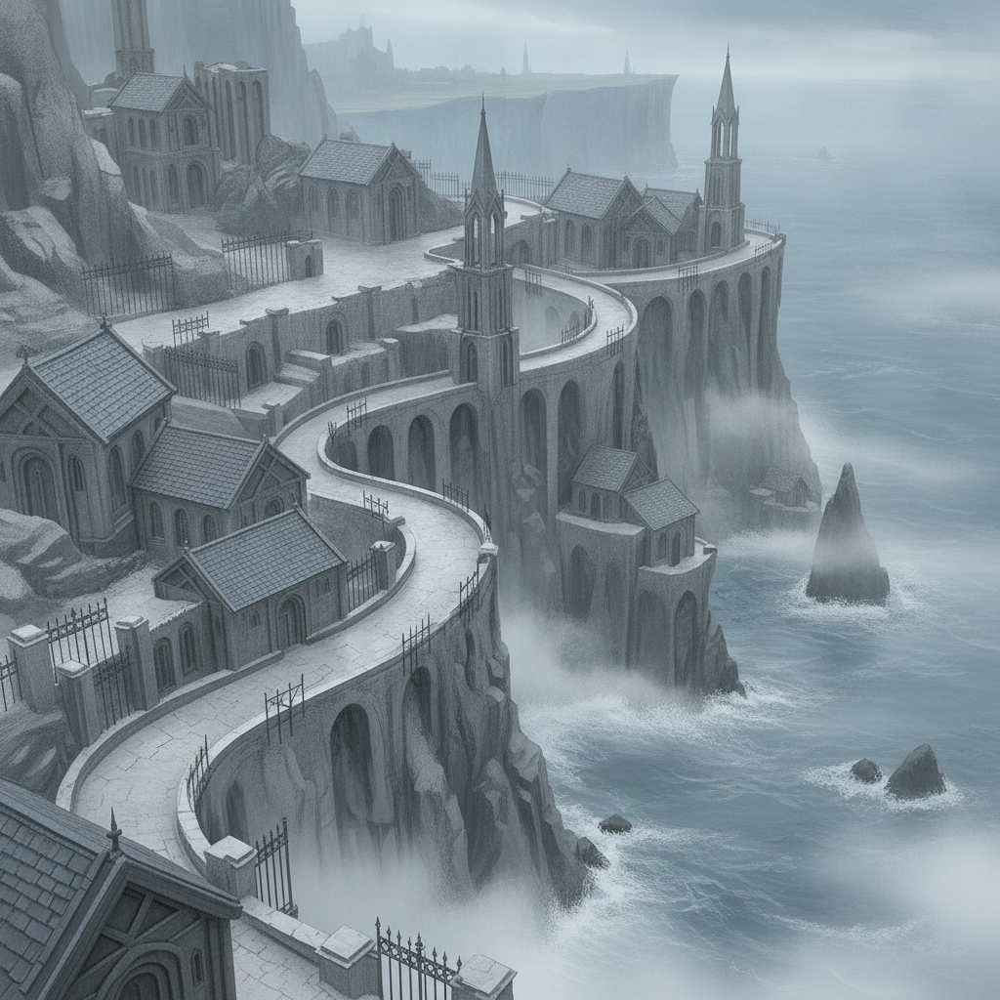

The Grey Principality of Vorn. A cold northern land of grey stone and iron, where the Assayers' writ runs absolute and channeling is leashed to piety.
We land in Isolde's homeland. Her grasp of Assayer methods and Vorn devotional networks keeps us alive, evading patrols and navigating the treacherous terrain.
As we delve deeper, we uncover a terrifying truth: the very order Isolde was raised to serve is implicated in the world's collapse.
The news of the executed pair lands on her like a verdict on her own faith. Her disciplined facade cracks, revealing a simmering doubt.